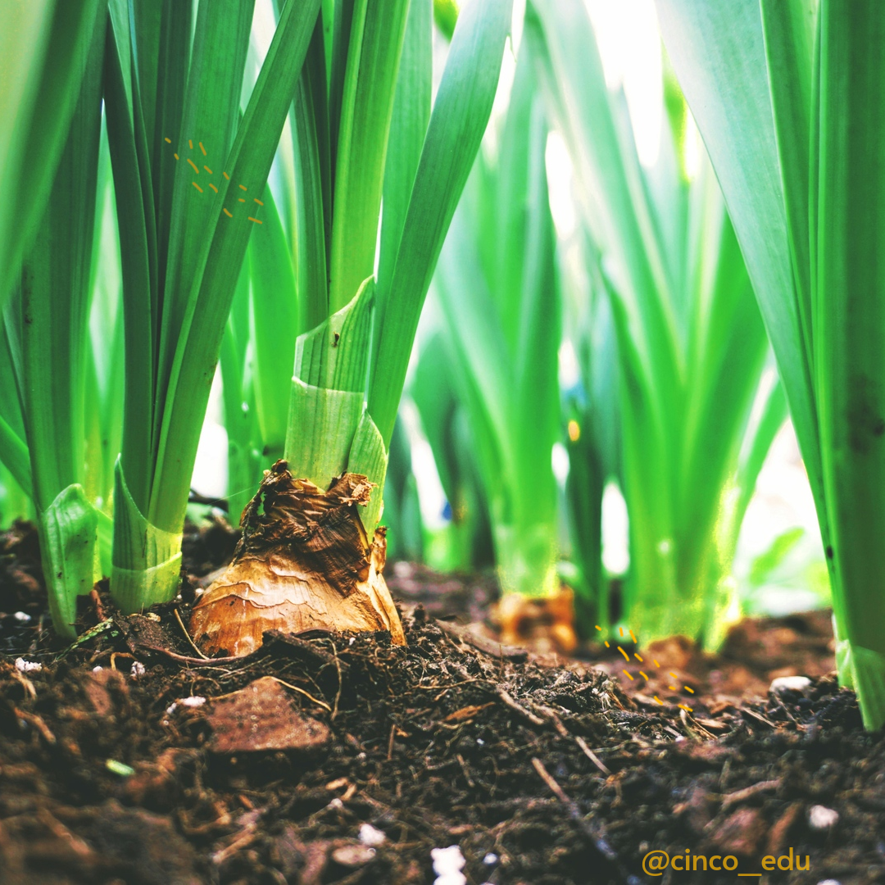
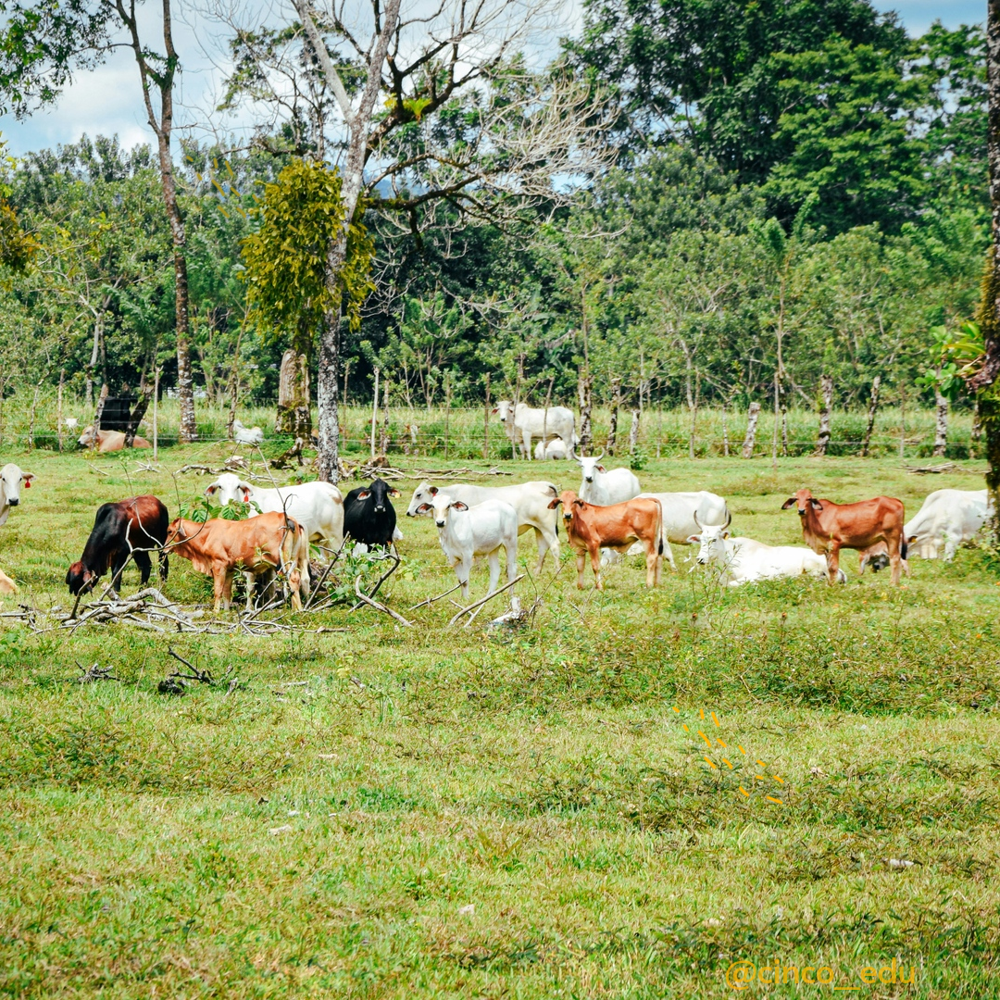
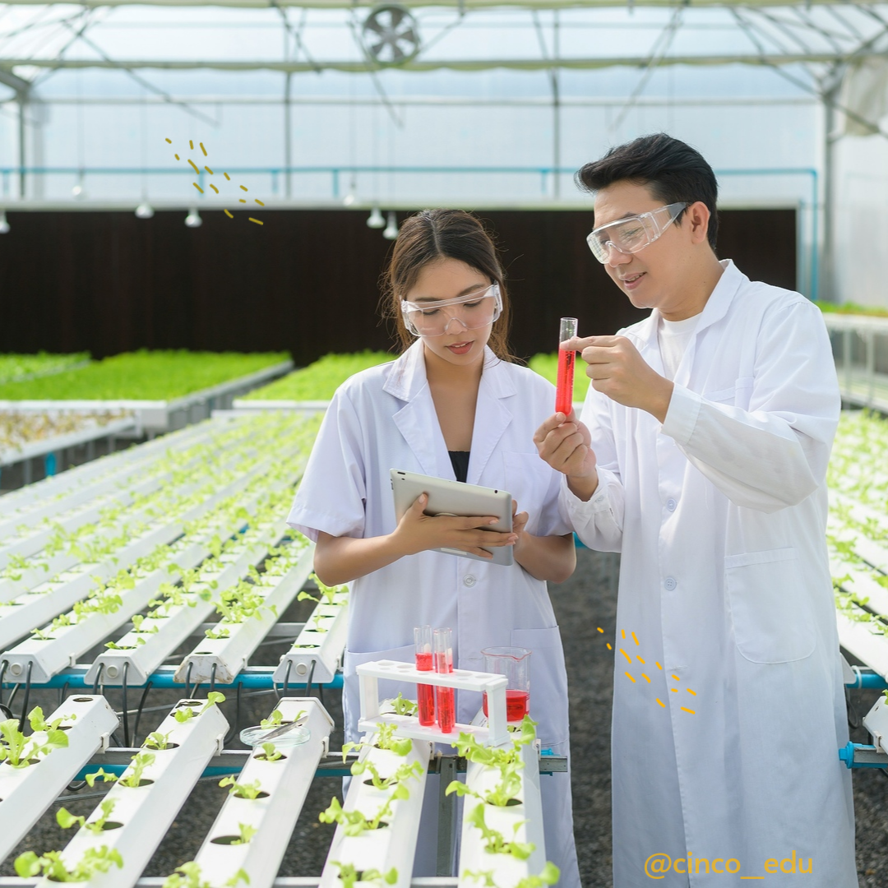

Fundamentos de Automatización
Haz que tu trabajo trabaje por ti: automatiza sin saber programar.
¿Qué aprenderás?
- ✓ Cómo detectar tareas repetitivas y convertirlas en flujos automáticos.
- ✓ Primeros pasos con herramientas no-code como Zapier y Make.
- ✓ Automatización de tareas con Google Sheets + Google Apps Script sin escribir código desde cero.
- ✓ Crear flujos simples entre apps como Gmail, Google Calendar, Sheets, y WhatsApp Business.
Docente Principal
PhD(c) Henrry Vertel - Experto en Tecnología Educativa

Automatización para Profesionales No Programadores
Aprende a automatizar tareas repetitivas y optimizar tu flujo de trabajo sin necesidad de conocimientos previos en programación. Domina herramientas como Zapier, Make, Google Apps Script.
¿Qué aprenderás?
- ✓ Automatización de procesos administrativos
- ✓ Integración de aplicaciones y servicios
- ✓ Creación de flujos de trabajo inteligentes
- ✓ Análisis y visualización de datos automatizada
Docente Principal
PhD(c). Henry Vertel - Experto en Tecnología Educativa
Neuroeducación Aplicada
Descubre cómo funciona el cerebro en el proceso de aprendizaje y aplica estos conocimientos para diseñar experiencias educativas más efectivas. Basado en las últimas investigaciones en neurociencia cognitiva.
¿Qué aprenderás?
- ✓ Neurobiología del aprendizaje y la memoria
- ✓ Estrategias basadas en evidencia neurocientífica
- ✓ Diseño de ambientes de aprendizaje óptimos
- ✓ Manejo de emociones y motivación en el aula
Docente Principal
Dra. Ana Sánchez - Neurocientífica especializada en educación
Psicología Positiva
Explora los fundamentos científicos del bienestar y la felicidad. Aprende técnicas y herramientas prácticas para promover el florecimiento humano en contextos clínicos, educativos y organizacionales.
¿Qué aprenderás?
- ✓ Teorías y modelos del bienestar psicológico
- ✓ Intervenciones basadas en fortalezas
- ✓ Técnicas de mindfulness y gratitud
- ✓ Aplicaciones en terapia y coaching
Docente Principal
Dr. Miguel Pérez - Especialista en Psicología Clínica Digital
Terapias Cognitivo-Conductuales
Profundiza en las técnicas más efectivas de la terapia cognitivo-conductual. Aprende protocolos específicos para ansiedad, depresión, trastornos de personalidad y adicciones.
¿Qué aprenderás?
- ✓ Conceptualización cognitiva de casos
- ✓ Técnicas de reestructuración cognitiva
- ✓ Protocolos TCC para diferentes trastornos
- ✓ Terapia de tercera generación
Docente Principal
Mg. Roberto Fernández - Terapeuta certificado con 20 años de experiencia
Neuropsicología Aplicada
Comprende la relación entre el cerebro y el comportamiento. Aprende a evaluar e intervenir en trastornos neuropsicológicos, rehabilitación cognitiva y estimulación neurocognitiva.
¿Qué aprenderás?
- ✓ Evaluación neuropsicológica integral
- ✓ Rehabilitación de funciones cognitivas
- ✓ Neuropsicología del desarrollo y envejecimiento
- ✓ Intervención en daño cerebral adquirido
Docente Principal
Dra. Patricia López - Investigadora en neurociencia cognitiva

Innovación para el CampoIntroducción a la ganadería regenerativa
Estrategias para Maximizar la Rentabilidad y la Salud del Suelo.
¿Qué aprenderás?
- ✓ Conoce los principios básicos de la ganadería regenerativa.
- ✓ Aplica los principios de manejo holístico en el agro.
- ✓ Diseña planes de pastoreo adaptativos para tu terreno.
- ✓ Mejora la salud de tus suelos y la producción de forraje.
- ✓ Analiza casos de éxito y desafíos en la ganadería regenerativa.
Docente Principal
MVZ Omar Montalvo - Especialista en Manejo Holistico

Innovación para el CampoGanadería Regenerativa
Aprende a restaurar la salud de tus suelos y potenciar la productividad la tierra, aumentar la rentabilidad de tu negocio y construir un futuro sostenible para tu ganadería.
¿Qué aprenderás?
- ✓ Aprende a utilizar el ganado como una herramienta para mejorar la productividad de la tierra y la salud del ecosistema.
- ✓ Desarrolla estrategias de rotación que aseguren la mejor alimentación del ganado y la rápida recuperación del pasto.
- ✓ Aprende a monitorear y evaluar indicadores clave (salud del suelo, producción de biomasa, ganancia de peso) para optimizar tus resultados.
- ✓ Descubre cómo la regeneración del suelo y el pastoreo estratégico disminuyen la dependencia de fertilizantes, pesticidas y suplementos.
- ✓ Examina ejemplos reales de fincas que han aumentado su rentabilidad al implementar la ganadería regenerativa.
Docente Principal
MVZ Omar Montalvo - Especialista en Manejo Holistico

Innovación para el CampoBiotecnología Agrícola
Explora las aplicaciones de la biotecnología en la agricultura moderna. Desde mejoramiento genético hasta biofertilizantes y control biológico de plagas.
¿Qué aprenderás?
- ✓ Fundamentos de biotecnología vegetal
- ✓ Cultivo de tejidos y micropropagación
- ✓ Biofertilizantes y biocontroladores
- ✓ Biotecnología y seguridad alimentaria
Docente Principal
Dra. María Herrera - PhD en Biotecnología Agrícola